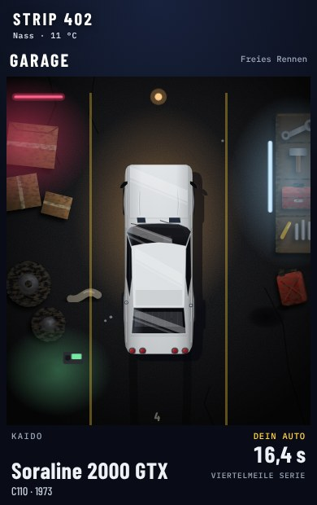
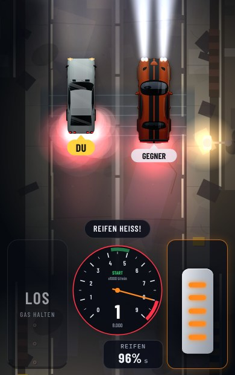
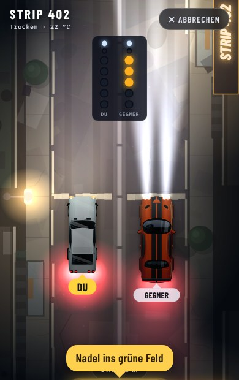

Quarter Mile
Dragrace auf dem Handy. Richtig schalten, Vollgas geben, eine Viertelmeile lang.

Dein Auto wartet in der Garage

Burnout, bis die Reifen heiß sind

Bei Grün geht es los
- 1Auto wählen und gegen einen Gegner antreten
- 2Reifen anwärmen, Drehzahl halten, bei Grün los
- 3Im richtigen Moment schalten, Karriere fahren, Autos tunen
Jetzt spielenOhne Anmeldung. Am besten auf dem Handy im Hochformat, mit Ton.